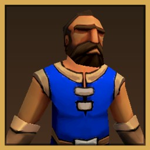
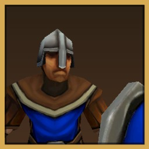
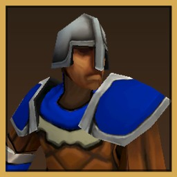
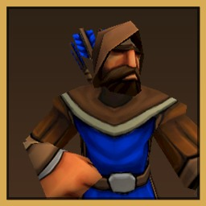

Story Campaign
A story-driven dark fantasy campaign across a fractured empire, Elven schemes and the return of the dead. Play it solo or in co-op with a friend.
Iron Foundry presents
The Emperor never returned from the Hallowed Crusade.
A decade later, the Empire has fractured, and the dead are rising.
Dark fantasy real-time strategy · Windows · Coming to Steam Early Access
The Empire once stood strong, uniting the kingdoms of Humans, Dwarves and Elves.
Then the Emperor learned of a dark force threatening the world. He gathered the greatest warriors from every kingdom and marched into uncharted lands to destroy it. They called it the Hallowed Crusade.
The Emperor never returned, and neither did his armies.
But the Empire may not have fallen to war alone. Treachery and scheming minds worked from within.
A decade later, the Empire has fractured. Kingdoms war against one another and old alliances have crumbled.
Now the dead are rising. Some would see them destroyed. Others would wield them as a weapon.
Recruit units and develop them through battle. Individual units can be upgraded and improved, so veteran warriors become powerful assets rather than disposable soldiers.
Forge alliances with other factions to gain their unique units and technologies, and combine the strengths of different kingdoms into armies no single faction could field alone.
But alliances can change the course of a war, and your allies may have ambitions of their own.




Ancient relics and forgotten technologies offer power beyond the ordinary.
Some are Hallowed, drawing on the ancient powers of the light to strengthen your armies and unlock powerful new abilities.
Others are Dark, offering forbidden power at a terrible cost. Embrace them and your faction may begin to change: your units, your technologies, and ultimately the nature of your civilization.
The dead have risen, but they need not be your enemy.
The fate of your faction is yours to decide.
A story-driven dark fantasy campaign across a fractured empire, Elven schemes and the return of the dead. Play it solo or in co-op with a friend.
Take your faction across a wider war, choosing where to expand, who to ally with and what powers to embrace.
Battle up to seven rivals, AI or human, on built-in maps or maps made by the community.
Build up and hold out against ever-growing waves for as long as you can.
Set up armies on either side and watch them clash. Test match-ups and tactics without building a base.
Make your own maps and share them with other players through the Steam Workshop.
Earn achievements as you progress through the story. Co-op partners earn them too.
Your saves, campaign progress and challenge progress sync between PCs automatically. Custom maps are not synced; share them through the Workshop.
Publish maps you make in the Level Creator, and subscribe to maps made by other players.
Unsubscribe to remove it again. A Workshop map never replaces one of your own maps with the same name.
A map is two files: MapName.json (the level) and MapName_logo.png (its preview picture).
Copy both into your Levels folder:
%USERPROFILE%\AppData\LocalLow\Iron Foundry\Hallowed Empire\Levels.json and _logo.png files in, keeping the same name.Build a map in the Level Creator, then choose File › Publish to Steam Workshop…. It uploads the map with its preview and opens the item page. Publishing the same map again updates it. First-time authors need to accept the Steam Workshop agreement on that page before the map becomes visible.
Wishlist Hallowed Empire on Steam to hear when Early Access opens.
Wishlist on Steam